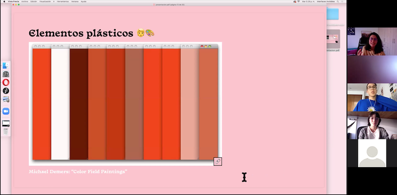
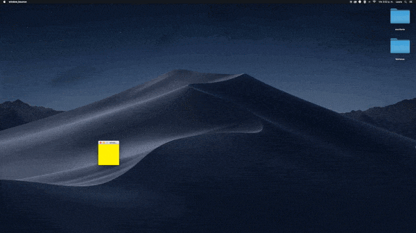
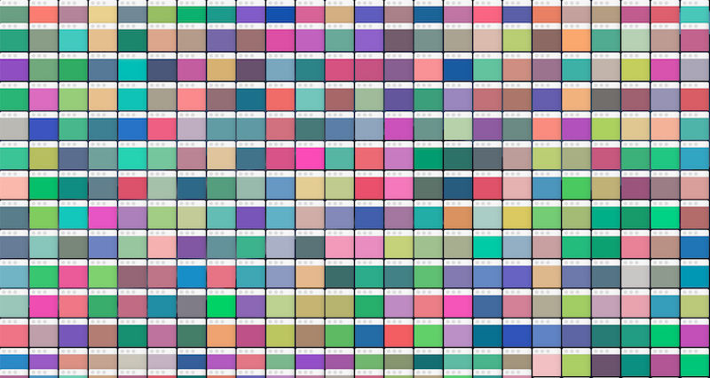

The window is one of the most commonly used metaphors in computing. These rectangular containers often go unnoticed, even when they are the most used graphical interface.
During the Processing Community Day Bogota 2021 I gave a workshop on the manipulation of windows of an operating system to explore its uses as plastic elements.
Check out the Github Repository
Role: Workshop teacher
Technologies: Processing, Java


